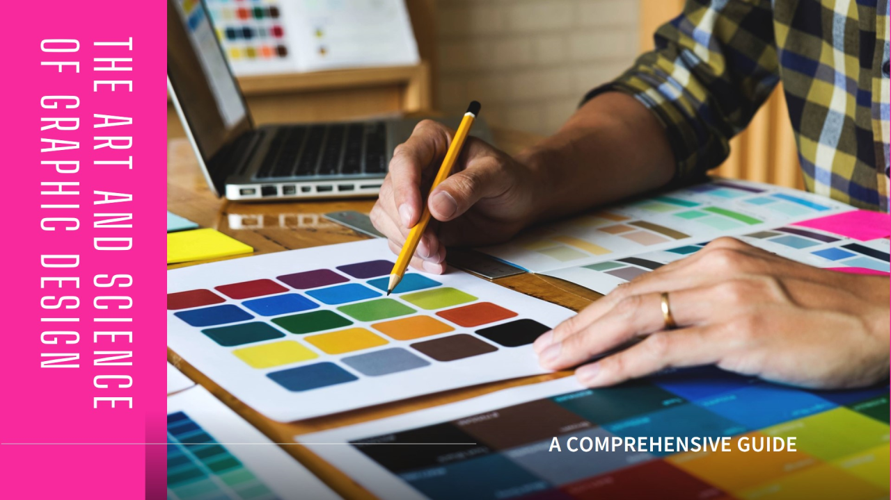
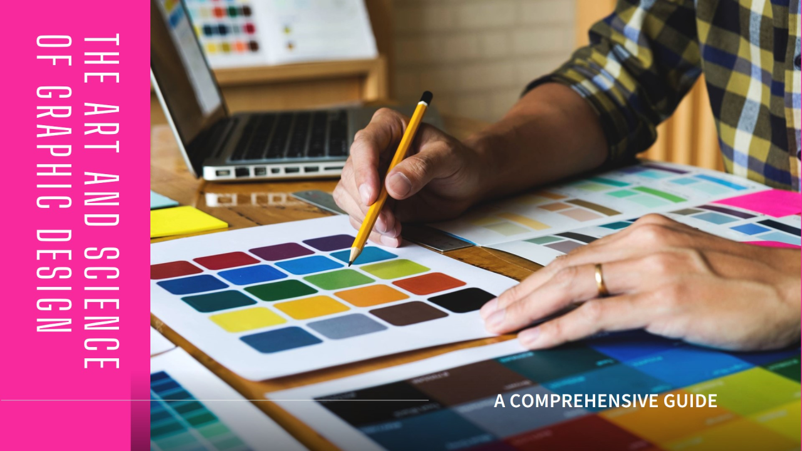

My Creative Portfolio
Explore a collection of my finest work in photography, digital art, and web design. Each piece reflects my dedication to creativity and storytelling.

Transforming Ideas into Reality
Welcome to a world where Art,design , and technology blend seamlessly. Join our creative journey and explore the endless possibilities of innovation.
Become a MemberExplore a collection of my finest work in photography, digital art, and web design. Each piece reflects my dedication to creativity and storytelling.

Hello! I’m a passionate creative professional specializing in photography,graphic design, and web development.
My work is driven by a love for storytelling and an eye for aesthetics.
Through my portfolio, I am to showcase the power of visual expression and inspire others to embrace creativity in their own unique way.
By joining our team, you gain access to hands-on learning experiences in various creative fields, including:
Enhance your coding skills with our expert-guided courses in the following languages:
Have questions or want to collaborate? Feel free to reach out!
Email: example@example.com
Phone: +255 747 000 422